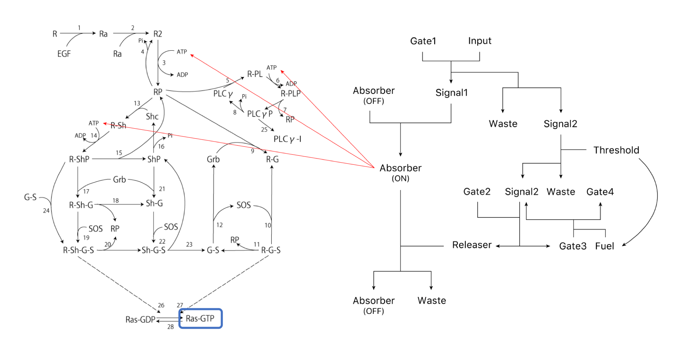
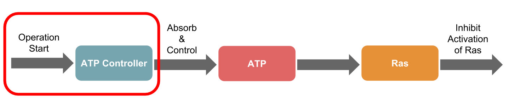
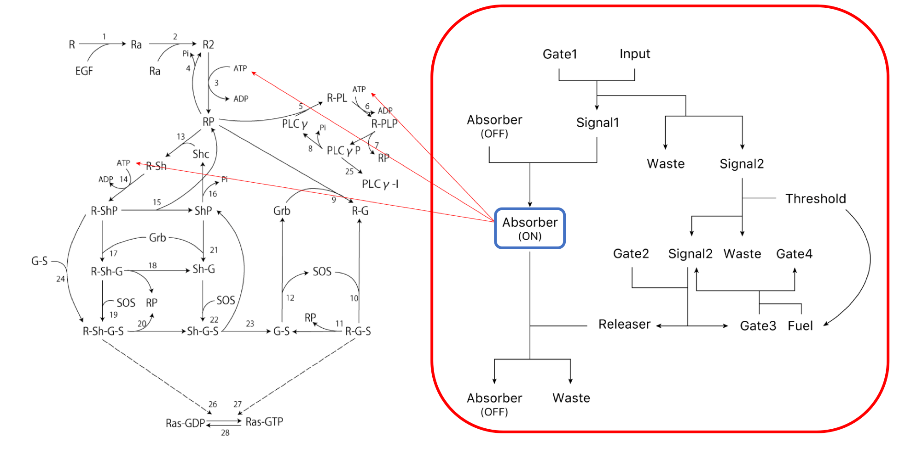
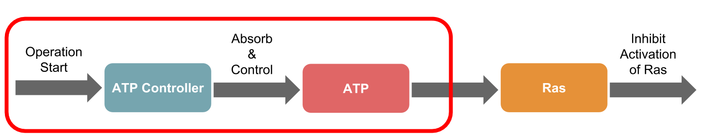
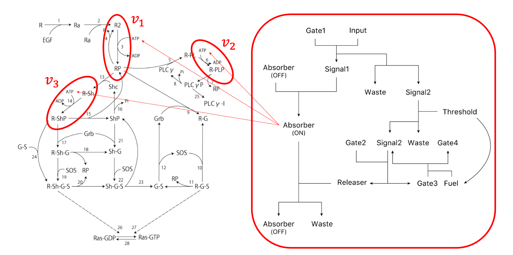

Page Overview
On this page, we simulate the entire system to demonstrate the validity of our concept.
The ATP controller of the DNA circuit, introduced on the System Design page,
simulated a series of factors affecting biological reactions.
In this study, we targeted the Ras activation mechanism and simulated suppression of Ras activation using the ATP Controller.
We referred to reference [x] as a mathematical model (Click image to enlarge).
{kind=link}
Proof of Concept
Overall Simulation
To evaluate the simulation, we used the integral as the evaluation item in the amplification, duration, and integral as shown in reference [x]. Next, the scheme of the transmission system used in this simulation is shown (Figure 2). The right side of the Figure 2 shows the ATP Controller and the left side shows the model of Ras activation.
{kind=link}
Hereinafter, let $\beta$[-] be the ATP consumption efficiency of the ATP controller.
Because this value could not be confirmed in this project, we simulated this parameter using various values.
First, we show the simulation results of the part surrounded by the red line in this project (Figure 3).
{kind=link}
The number of chemical species, parameters, rate equations, and differential equations
used in the simulation are shown in Table 1 below [x][x].
{kind=link}
Time changes in activated Ras (part surrounded by the blue line of Figure 2) when the Threshold [nM] is constant
and $\beta$ is changed are shown in Figure 4 and its integral value is shown below as Figure 5.
{kind=link}
{kind=link}
Figures 4 and 5 show that Ras activation is suppressed as the value of $\beta$ is increased,
that is, as the consumption efficiency of ATP is increased.
Additionally, compared to the case in which $\beta$ = 0,
that is, when the circuit that consumes ATP is not operated (normal Kholodenko model), activation of Ras is suppressed in either case.
Next, time changes in activated Ras (part surrounded by blue line in Figure 2)
when $\beta$ is constant and the Threshold is varied are shown in Figure 6 and the integral value is shown below as Figure 7.
For the role of the Threshold, see the DNA Circuit DNA Circuit of System Design.
{kind=link}

As shown in Figures 6 and 7, when the value of the Threshold is increased,
that is, the longer the ATP controller turns on, the more ATP is consumed, Ras activation is suppressed.
In this case, as in the previous case, compared to when the ATP Controller was not operated (normal Kholodenko model),
activation of Ras is suppressed. Based on these results, the following was confirmed (Figure 8).
DNA Circuit Operation
First, we simulate the operation of the ATP controller of the DNA circuit (Figure 9,10).
{kind=link}

{kind=link}
The temporal change in the concentration of Absorber(ON) (the part surrounded by blue in Figure 10) generated by operation of the ATP controller
described in the System Design section is shown below (Figure 11).
The initial concentrations of the substances used in the simulation were as follows.
All initial concentrations of substances not described below are 0 nM.
$\rm Gate1=100[nM],\ Input=100[nM],$
$\rm Absorber(OFF)=100[nM],\ Gate2=100[nM]$
{kind=link}
Figure 11 shows that as the Threshold value increased, Absorber(ON) generation increased,
that is, the ATP controller spent a longer time in the ON state.
ATP Absorption
Next, we simulated the ATP Controller to consume ATP (Figure 12,13).
{kind=link}

{kind=link}
Change in concentration of ATP is described by the following rate equation of $v_{1} \sim v_{5}$.
$v_{1} = -\alpha_{1} \cdot [\rm R_{2}] \cdot [\rm ATP],\ \alpha_{1}=3.0×10^{-4}[\rm 1/nMs]$
$v_{2} = -\alpha_{2} \cdot [\rm R$-$\rm PL] \cdot [\rm ATP],\ \alpha_{2}=7.0×10^{-4}[\rm 1/nMs]$
$v_{3} = -\alpha_{3} \cdot [\rm R$-$\rm Sh] \cdot [\rm ATP],\ \alpha_{3}=9.0×10^{-4}[\rm 1/nMs]$
$v_{4} = \gamma,\ \gamma=90.0[\rm nM/s]$
$v_{5} = -\beta \cdot [\rm Absorber(ON)] \cdot [\rm ATP]$
Here, $v_{1} \sim v_{3}$ shows the rate equations in the following scheme drawing (Figure 13).
Additionally, it is assumed that $v_{4}$ represents the production rate of ATP generated in the cell,
which was presumed to be generated at a constant generation rate.
The values of $\alpha_{1} \sim \alpha_{3}$ and $\gamma$ of the coefficient were determined by comparison with the results of [x].
$v_{5}$ shows how the Absorber(ON) generated by the ATP Controller consumes ATP.
As described above, $\beta$ is a coefficient representing the consumption efficiency of ATP by the ATP Controller.
Using the rate equation of $v_{1} \sim v_{5}$, the differential equation of ATP is as follows.
$\large \frac{d[\rm ATP]}{dt} = v_{1} + v_{2} + v_{3} + v_{4} + v_{5}$
The manner by which ATP is absorbed and decreased by the Absorber(ON)
generated by the ATP Controller is shown below (Figure 14,15).
Figure 14 shows the temporal change in the ATP concentration with respect to the value of $\beta$ when the Threshold is constant.
Figure 15 shows the temporal change in the concentration of ATP with respect to the value of the Threshold when $\beta$ is constant.
The initial concentrations of the substances used in the simulation were as follows.
All initial concentrations of substances not described below are 0 nM.
$\rm Gate1=100[nM],\ Input=100[nM],$
$\rm Absorber(OFF)=100[nM],\ Gate2=100[nM],$
$\rm EGF=666[nM],\ R=100[nM],\ PLC\gamma=105[nM],\ Grb=85[nM],$
$\rm Shc=150[nM],\ SOS=34[nM],\ ATP=10,000[nM]$
{kind=link}
{kind=link}
As shown in Figures 14 and 15, in both cases, it was confirmed that the concentration of ATP decreased when $\beta$ = 0, that is, when compared to ATP in the ordinary Kholodenko model. Further, as shown in Figure 14, ATP decreased as the value of $\beta$ increased, that is, as ATP consumption efficiency increased. Furthermore, ATP decreased as the Threshold value increased, that is, as the DNA circuit was turned ON for a longer time.
Inhibit Activation of Ras
Finally, we simulated the changes in Ras activation due to a reduction of ATP.
The part in whitch ATP is involved in activating Ras is the part shown in Figure 16 below.
{kind=link}
Reactions ①-③ in Figure 16 are represented by the following formulas.
① $k_{3} \cdot [{\rm R_{2}}]-k_{-3} \cdot [{\rm RP}],\ k_{3}=1{\rm [1/s]},\ k_{-3}=0.01{\rm [1/s]}$
② $k_{6} \cdot [{\rm R}$-${\rm PL}]-k_{-6} \cdot [{\rm R}$-${\rm PLP}],\ k_{6}=1{\rm [1/s]},\ k_{-6}=0.05{\rm [1/s]}$
③ $k_{14} \cdot [{\rm R}$-${\rm Sh}]-k_{-14} \cdot [{\rm R}$-${\rm ShP}],\ k_{14}=6{\rm [1/s]},\ k_{-14}=0.06{\rm [1/s]}$
We assumed that these reaction rate coefficients, $k_{x}$ and $k_{-x}$
changed linearly with the concentration of ATP.
Additionally, we assumed that the concentration of ATP was kept constant, and the reaction rate coefficients
at time $t$ were $k_{x}^{'}$ and $k_{-x}^{'}$ and are determined as follows.
$\large k_{x}^{'}=\frac{[{\rm ATP}](t)}{{\rm [ATP]}(0)} \cdot k_{x},\ k_{-x}^{'}=\frac{{[\rm ATP]}(t)}{{\rm [ATP]}(0)} \cdot k_{-x}$
In addition, $v_{6} \sim v_{8}$ represent the reactions involved in Ras activation
and represent 26, 27, and 28 in the following scheme diagram (Figure 17).
Ras activated by Ras-GTP is represented by Ras before activation of Ras-GDP.
{kind=link}
$\large v_{6} = \frac{k_{26} \cdot [\rm R‐Sh‐G‐S] \cdot [\rm Ras‐GDP]}{k_{-26}+[\rm Ras‐GDP]}$
$\large v_{7} = \frac{k_{27} \cdot [\rm R‐G‐S] \cdot [\rm Ras‐GDP]}{k_{-27}+[\rm Ras‐GDP]}$
$\large v_{8} = \frac{k_{28} \cdot [\rm Ras‐GTP]}{k_{-28}+[\rm Ras‐GTP]}$
However,
$ k_{26}=5.40×10^{1}{\rm [1/s]},\ k_{-26}=2.28×10^{2}{\rm [nM]},$
$\ k_{27}=5.40×10^{1}{\rm [1/s]},\ k_{-27}=2.28×10^{2}{\rm [nM]},$
$\ k_{28}=3.09×10^{1}{\rm [1/s]},\ k_{-28}=2.76×10^{1}{\rm [nM]}$
The values of these coefficients were referred to as [x].
$v_{6}$ and $v_{7}$ represent Ras activation (phosphorylation), while $v_{8}$ represents Ras inactivation (dephosphorylation).
Therefore, the differential equations of Ras-GTP and Ras-GDP are as follows.
$\large \frac{d[\rm Ras‐GTP]}{dt} = v_{6}+v_{7}-v_{8}$
$\large \frac{d[\rm Ras‐GDP]}{dt} = -v_{6}-v_{7}+v_{8}$
Therefore, when simulation was carried out using the above equation and the reaction rate coefficients described above,
Figure 4-7 as described at the beginning were obtained.
Additionally, by simulating the case of
$\beta=0,\ 5.0×10^{-6},\ 5.0×10^{-5},$ and $5.0×10^{-4}$, and Threshold$=5,\ 50,$ and $95$,
the integrated values of the concentration of activated Ras were determined as shown in Figure 18.
The initial concentration is the same as before.
These results confirmed that Ras activation was suppressed by adjusting $\beta$ and the Threshold.
{kind=link}
File Download
The source code used for simulation was prepared in C language and MATLAB, which can be downloaded from the following link.
Simulation can be conducted with the C language source code called DP_Gate_Bridge.c.
The result is output to data.txt, and the graph is drawn with the MATLAB source code called plot_data.m.
The files kholodenko_add_Absorber_run.m and kholodenko_add_Absorber.m are simulated only by MATLAB.
If you want to download these files, click the file names and go to Gist.
- View Source Code▼
-